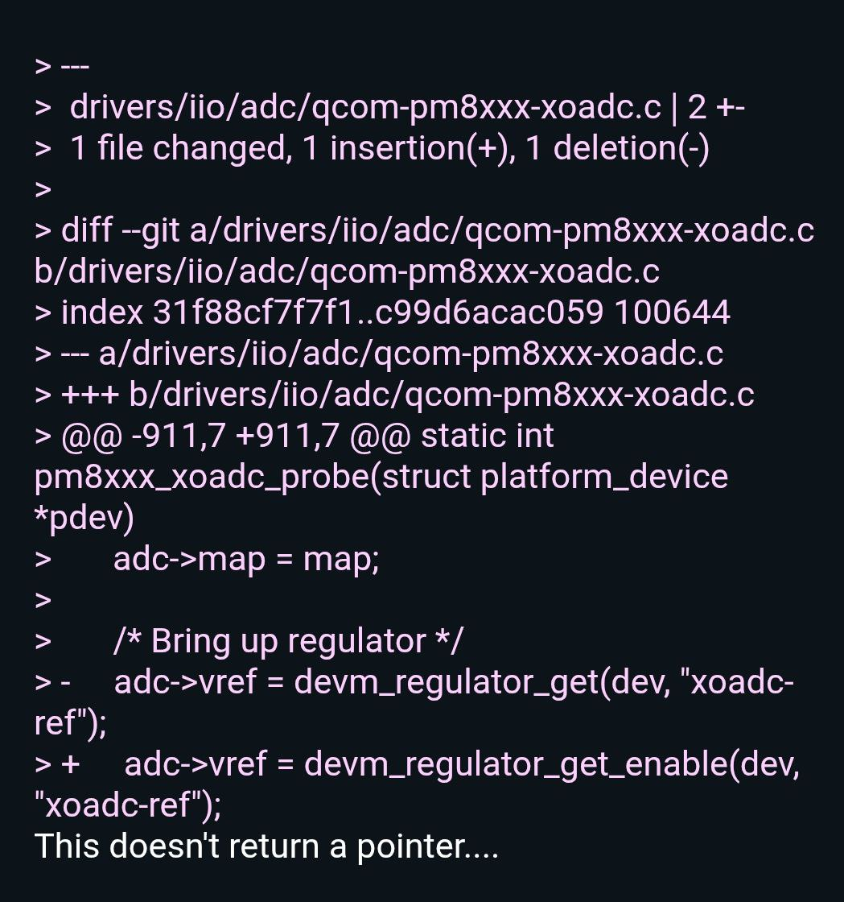
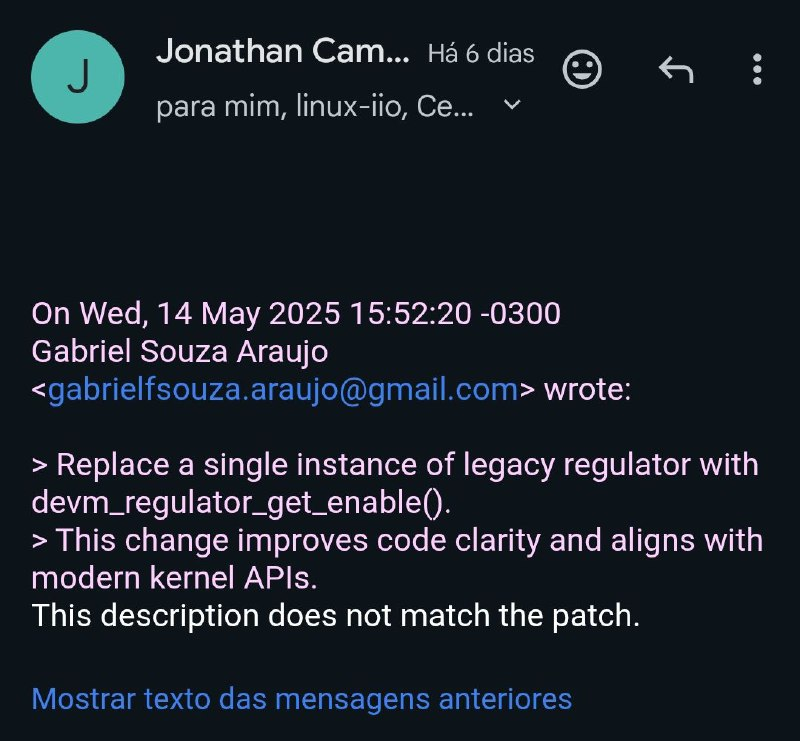

Configuração de Ambiente com QEMU e libvirt
Neste tutorial, aprendi a montar um ambiente virtualizado usando QEMU e libvirt, essencial para testar versões personalizadas do kernel Linux sem comprometer meu sistema principal. Compreendi a criação de máquinas virtuais por linha de comando e a importância da configuração correta da rede e do armazenamento. Um dos maiores aprendizados foi entender como o QEMU se integra ao libvirt para oferecer uma interface de gerenciamento eficiente. O principal desafio foi configurar a rede bridge para garantir que a VM tivesse acesso à internet.
Compilando o Kernel para ARM
Esse tutorial me introduziu ao processo de compilação cruzada do kernel para a arquitetura ARM. Aprendi a instalar e usar toolchains adequadas, configurar o kernel com make menuconfig e gerar uma imagem compatível com dispositivos embarcados. Essa etapa foi especialmente valiosa para entender como o kernel se adapta a diferentes hardwares. O ponto mais complexo foi lidar com a infinidade de opções de configuração do kernel, que exigem atenção a detalhes específicos do hardware alvo.
Introdução a Módulos do Kernel
Aqui comecei a interagir com o kernel de forma prática, escrevendo e carregando módulos personalizados. Estudei como os módulos são compilados separadamente e inseridos dinamicamente com os comandos insmod e rmmod. Testei funções básicas como imprimir mensagens no dmesg e manipular parâmetros em tempo de execução. Foi empolgante perceber como é possível estender as funcionalidades do kernel sem recompilar todo o sistema. O maior aprendizado foi entender o ciclo de vida de um módulo e como garantir sua estabilidade.
Drivers de Caractere
Esse passo aprofundou o contato com a criação de drivers, focando na implementação de drivers de caractere. Descobri como usar estruturas como file_operations para definir as funções que lidam com leitura, escrita e abertura de arquivos de dispositivo. Também compreendi a relação entre o driver e o espaço de usuário via dispositivos em /dev. Foi uma etapa complexa, especialmente ao lidar com ponteiros e buffers de forma segura, mas extremamente enriquecedora para entender como o kernel interage com o mundo exterior.
Anatomia de um Driver IIO
Neste ponto, entrei no mundo dos drivers do subsistema IIO (Industrial I/O), que lidam com sensores e dispositivos analógicos. Analisei a estrutura de um driver dummy para entender a hierarquia e as responsabilidades de cada função. Compreendi como sensores são expostos ao espaço de usuário e como configurar canais de leitura. A modularidade do código e a interação com sysfs e debugfs foram aspectos particularmente interessantes. Esse estudo me preparou para compreender como drivers reais de sensores são escritos e integrados.
Envio de Patch com devm_regulator_get_enable()
Na etapa final do processo, trabalhei na submissão de um patch para modernizar a inicialização de drivers. Utilizei as funções devm_regulator_get_enable(), devm_regulator_get_enable_optional() e devm_regulator_get_enable_read_voltage() para substituir chamadas manuais de inicialização, promovendo uma abordagem mais segura e moderna. Essa mudança não apenas reduziu o número de linhas de código, como também melhorou a gestão automática de recursos pelo kernel. Foi um desafio entender a compatibilidade dessas funções com o driver existente, mas ao final, ganhei uma compreensão sólida sobre como manter e evoluir código legado no kernel Linux.
Andamento do Envio do Patch
Tentativa 1:
Na primeira tentativa, enfrentamos problemas na compilação devido a um ponteiro sendo retornado onde não deveríamos. Abaixo, você pode ver a imagem que ilustra esse erro:
Tentativa 2:
Na segunda tentativa, decidimos modificar apenas um arquivo, o que resolveu o problema de compilação. Entretato, enviamos o patch sem incluir o commit anterior, o que resultou em inconsistência no envio. Como resultado, foi necessário realizar o processo de git squash. Veja a imagem abaixo:
Tentativa 3:
Na terceira tentativa, enfrentamos dificuldades para fazer o git squash corretamente. Como solução, restauramos o repositório ao estado inicial usando os comandos git fetch e git pull. A seguir, o patch que estamos desenvolvendo:
Replace a single instance of legacy regulator with devm_regulator_get_enable().
This change improves code clarity and aligns with modern kernel APIs.
Signed-off-by: Gabriel Souza Araujo
Co-developed-by: Cesar Bispo
Signed-off-by: Cesar Bispo
---
drivers/iio/adc/qcom-pm8xxx-xoadc.c | 13 +++----------
1 file changed, 3 insertions(+), 10 deletions(-)
diff --git a/drivers/iio/adc/qcom-pm8xxx-xoadc.c b/drivers/iio/adc/qcom-pm8xxx-xoadc.c
index 31f88cf7f7f1..a37ba6fad146 100644
--- a/drivers/iio/adc/qcom-pm8xxx-xoadc.c
+++ b/drivers/iio/adc/qcom-pm8xxx-xoadc.c
@@ -911,11 +911,7 @@ static int pm8xxx_xoadc_probe(struct platform_device *pdev)
adc->map = map;
/* Bring up regulator */
- adc->vref = devm_regulator_get(dev, "xoadc-ref");
- if (IS_ERR(adc->vref))
- return dev_err_probe(dev, PTR_ERR(adc->vref),
- "failed to get XOADC VREF regulator\n");
- ret = regulator_enable(adc->vref);
+ ret = devm_regulator_get_enable(dev, "xoadc-ref");
if (ret) {
dev_err(dev, "failed to enable XOADC VREF regulator\n");
return ret;
@@ -925,7 +921,7 @@ static int pm8xxx_xoadc_probe(struct platform_device *pdev)
pm8xxx_eoc_irq, NULL, 0, variant->name, indio_dev);
if (ret) {
dev_err(dev, "unable to request IRQ\n");
- goto out_disable_vref;
+ return ret;
}
indio_dev->name = variant->name;
@@ -936,7 +932,7 @@ static int pm8xxx_xoadc_probe(struct platform_device *pdev)
ret = iio_device_register(indio_dev);
if (ret)
- goto out_disable_vref;
+ return ret;
ret = pm8xxx_calibrate_device(adc);
if (ret)
@@ -948,9 +944,6 @@ static int pm8xxx_xoadc_probe(struct platform_device *pdev)
out_unreg_device:
iio_device_unregister(indio_dev);
-out_disable_vref:
- regulator_disable(adc->vref);
-
return ret;
}